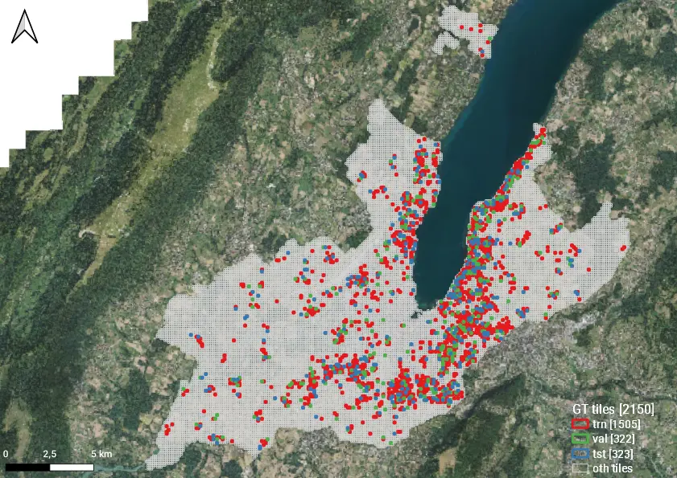
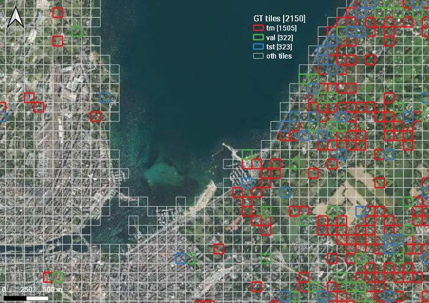
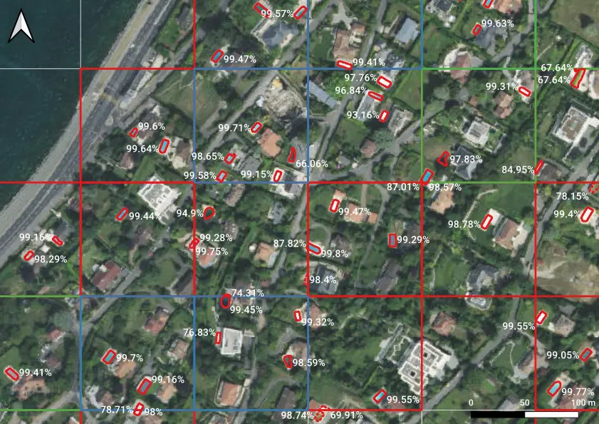
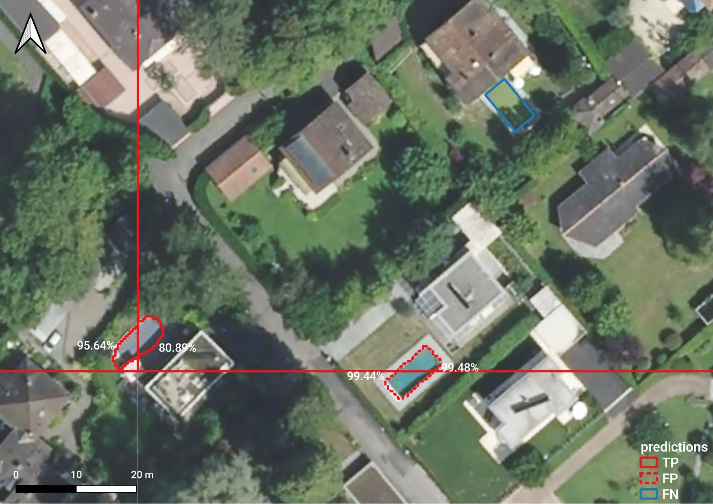
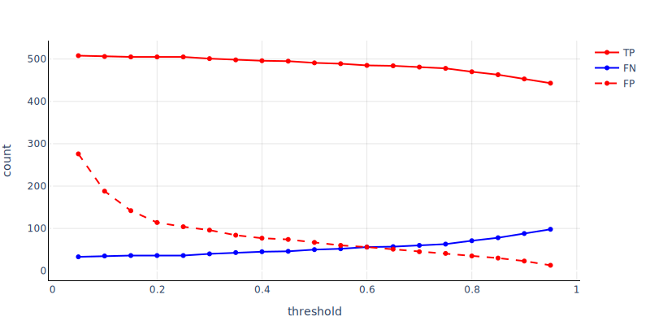
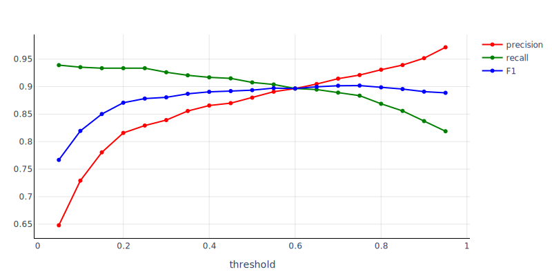
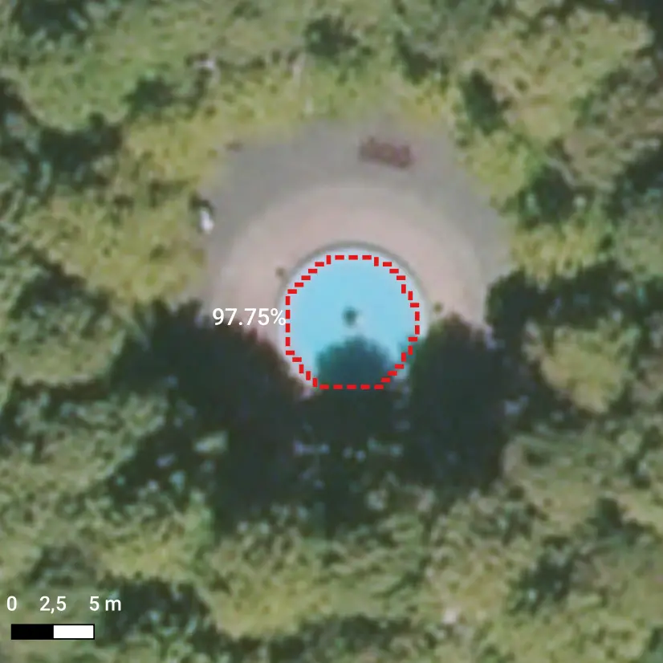
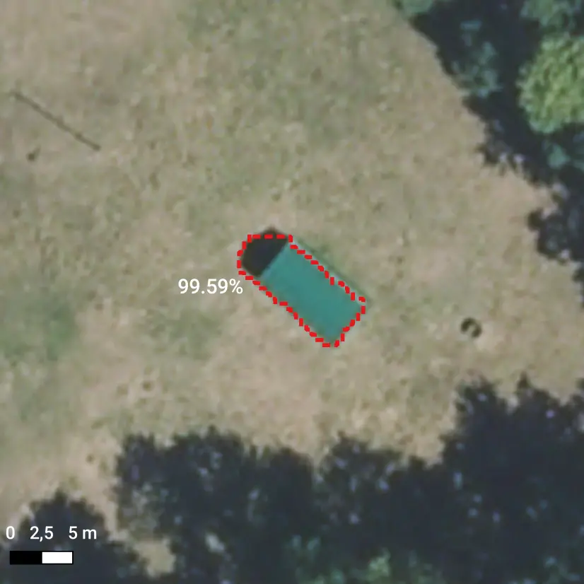
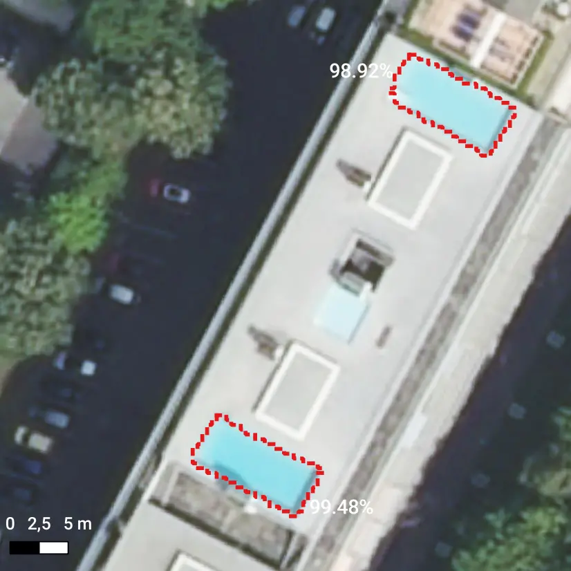

Swimming Pool Detection from Aerial Images over the Canton of Geneva ¶
Alessandro Cerioni (Canton of Geneva) - Adrian Meyer (FHNW)
Proposed by the Canton of Geneva - PROJ-GEPOOL
September 2020 to January 2021 - Published on May 18, 2021
This work by STDL is licensed under CC BY-SA 4.0


Abstract: Object detection is one of the computer vision tasks which can benefit from Deep Learning methods. The STDL team managed to leverage state-of-art methods and already existing open datasets to first build a swimming pool detector, then to use it to potentially detect unregistered swimming pools over the Canton of Geneva. Despite the success of our approach, we will argue that domain expertise still remains key to post-process detections in order to tell objects which are subject to registration from those which aren't. Pairing semi-automatic Deep Learning methods with domain expertise turns out to pave the way to novel workflows allowing administrations to keep cadastral information up to date.
Introduction¶
The Canton of Geneva manages a register of swimming pools, counting - in principle - all and only those swimming pools that are in-ground or, at least, permanently fixed to the ground. The swimming pool register is part of a far more general cadastre, including several other classes of objects (cf. this page).
Typically the swimming pool register is updated either by taking building/demolition permits into account, or by manually checking its multiple records (4000+ to date) against aerial images, which is quite a long and tedious task. Exploring the opportunity of leveraging Machine Learning to help domain experts in such an otherwise tedious tasks was one of the main motivations behind this study. As such, no prior requirements/expectations were set by the recipients.
The study was autonomously conducted by the STDL team, using Open Source software and Open Data published by the Canton of Geneva. Domain experts were asked for feedback only at a later stage. In the following, details are provided regarding the various steps we followed. We refer the reader to this page for a thorough description of the generic STDL Object Detection Framework.
Method¶
Several steps are required to set the stage for object detection and eventually reach the goal of obtaining - ideally - even more than decent results. Despite the linear presentation that the reader will find here-below, multiple back-and-forths are actually required, especially through steps 2-4.
1. Data preparation¶
As a very first step, one has to define the geographical region over which the study has to be conducted, the so-called "Area of Interest" (AoI). In the case of this specific application, the AoI was chosen and obtained as the geometric subtraction between the following two polygons:
- the unary union of all the polygons of the Canton of Geneva's cadastral parcels dataset, published as Open Data by the SITG, cf. PARCELLES DE LA MENSURATION;
- the polygon corresponding to the Lake Geneva ("lac Léman" in French), included in the EMPRISE DU LAC LEMAN (Complet) open dataset, published by the SITG as well.
The so-defined AoI covers both the known "ground-truth" labels and regions over which hypothetical unknown objects are expected to be detected.
The second step consists in downloading aerial images from a remote server, following an established tiling strategy. We adopted the so-called "Slippy Map" tiling scheme. Aerial images were fetched from a raster web service hosted by the SITG and powered by ESRI ArcGIS Server. More precisely, the following dataset was used: ORTHOPHOTOS AGGLO 2018. According to our configuration, this second step produces a folder including one GeoTIFF image per tile, each image having a size of 256x256 pixels. In terms of resolution - or better, in terms of "Ground Sampling Distance" (GSD) - the combination of
- 256x256 pixels images and
- zoom level 18 Slippy Map Tiles
yields approximately a GSD of ~ 60 cm/pixel. The tests we performed at twice the resolution showed little gain in terms of predictive power, surely not enough to support the interest in engaging 4x more resources (storage, CPU/GPU, ...).
The third step amounts to splitting the tiles covering the AoI (let's label them "AoI tiles") twice:
-
first, tiles are partitioned into two subsets, according to whether they include (
GTtiles) or not (othtiles) ground-truth labels:\(\mbox{AoI tiles} = (\mbox{GT tiles}) \cup (\mbox{oth tiles}),\; \mbox{with}\; (\mbox{GT tiles}) \cap (\mbox{oth tiles}) = \emptyset\)
-
Then, ground-truth tiles are partitioned into three other subsets, namely the training (
trn), validation (val) and test (tst) datasets:\(\mbox{GT tiles} = (\mbox{trn tiles}) \cup (\mbox{val tiles}) \cup (\mbox{tst tiles})\)
with \(A \neq B \Rightarrow A \cap B = \emptyset, \quad \forall A, B \in \{\mbox{trn tiles}, \mbox{val tiles}, \mbox{tst tiles}, \mbox{oth tiles}\}\)
We opted for the 70%-15%-15% dataset splitting strategy.

Slippy Map Tiles at zoom level 18 covering the Area of Interest, partitioned into several subsets: ground-truth (GT = trn + val + tst), other (oth).

Zoom over a portion of the previous image.
Concerning ground-truth labels, the final results of this study rely on a curated subset of the public dataset including polygons corresponding to the Canton of Geneva's registered swimming pools, cf. PISCINES. Indeed, some "warming-up" iterations of this whole process allowed us to semi-automatically identify tiles where the swimming pool register was inconsistent with aerial images, and viceversa. By manually inspecting the tiles displaying inconsistency, we discarded those tiles for which the swimming pool register seemed to be wrong (at least through the eyes of a Data Scientist; in a further iteration, this data curation step should be performed together with domain experts). While not having the ambition to return a "100% ground-truth" training dataset, this data curation step yielded a substantial gain in terms of \(F_1\) score (from ~82% to ~90%, to be more precise).
2. Model training¶
A predictive model was trained, stemming from one of the pre-trained models provided by Detectron2. In particular, the "R50-FPN" baseline was used (cf. this page), which implements a Mask R-CNN architecture leveraging a ResNet-50 backbone along with a Feature Pyramid Network (FPN). We refer the reader e.g. to this blog article for further information about this kind of Deep Learning methods.
Training a (Deep) Neural Network model means running an algorithm which iteratively adjusts the various parameters of a Neural Network (40+ million parameters in our case), in order to minimize the value of some "loss function". In addition to the model parameters (otherwise called "weights", too), multiple "hyper-parameters" exist, affecting the model and the way how the optimization is performed. In theory, one should automatize the hyper-parameters tuning, in order to eventually single out the best setting among all the possible ones. In practice, the hyper-parameters space is never fully explored; a minima, a systematic search should be performed, in order to find a "sweet spot" among a finite, discrete collection of settings. In our case, no systematic hyper-parameters tuning was actually performed. Instead, a few man hours were spent in order to manually tune the hyper-parameters, until a setting was found which the STDL team judged to be reasonably good (~90% \(F_1\) score on the test dataset, see details here-below). The optimal number of iterations was chosen so as to approximately minimize the loss on the validation dataset.
3. Prediction¶
Each image resulting from the tiling of the AoI constitutes - let's say - the "basic unit of computation" of this analysis. Thus, the model optimized at the previous step was used to make predictions over:
- the
othimages, meaning images covering no already known swimming pools; - the
trn,valandtstimages, meaning images covering already known swimming pools.
The combination of predictions 1 and 2 covers the entire AoI and allows us to discover potential new objects as well as to check whether some of the known objects are outdated, respectively.
Image by image, the model produces one segmentation mask per detected object, accompanied by a score ranging from a custom minimum value (5% in our setting) to 100%. The higher the score, the most the model is confident about a given prediction.

Sample detections of swimming pools, accompanied by scores. Note that multiple detections can concern the same object, if the latter extends over multiple tiles.
Let us note that not only swimming pools exhibiting only "obvious" features (bluish color, rectangular shape, ...) were detected, but also:
- swimming pools covered by some tarp;
- empty swimming pools;
- etc.
As a matter of fact, the training dataset was rich enough to also include samples of such somewhat tricky cases.
4. Prediction assessment¶
As described here in more detail, in order to assess the reliability of the predictive model predictions have to be post-processed so as to switch from the image coordinates - ranging from (0, 0) to (255, 255) in our case, where 256x256 pixel images were used - to geographical coordinates. This amounts to applying an affine transformation to the various predictions, yielding a vector layer which we can compare with ground-truth (GT) data by means of spatial joins:
- objects which are detected and can also be found in
GTdata are referred to as "true positives" (TPs); - objects which are detected but cannot be found in
GTdata are referred to as "false positives" (FPs); GTobjects which are not detected are referred to as "false negatives" (FNs).

Example of a true positive (TP), a false positive (FP) and a false negative (FN). Note that both the TP and the FP object are detected twice, as they extend over multiple tiles.
The counting of TPs, FPs, FNs allow us to compute some standard metrics such as precision, recall and \(F_1\) score (cf. this Wikipedia page for further information). Actually, one count (hence one set of metrics) can be produced per choice of the minimum score that one is willing to accept. Choosing a threshold value (= thr) means keeping all the predictions having a score >= thr and discarding the rest. Intuitively,
- a low threshold should yield a few false negatives;
- a high threshold should yield a few false positives.
Such intuitions can be confirmed by the following diagram, which we obtained by sampling the values of thr by steps of 0.05 (= 5%), from 0.05 to 0.95.

True positives (TPs), false negatives (FNs), and false positives (FPs) counted over the test dataset, as a function of the threshold on the score: for a given threshold, all and only the predictions exhibiting a bigger score are kept.

Performance metrics computed over the test dataset as a function of the threshold on the score: for a given threshold, all and only the predictions exhibiting a bigger score are kept.
The latter figure was obtained by evaluating the predictions of our best model over the test dataset. Inferior models exhibited a similar behavior, with a downward offset in terms of \(F_1\) score. In practice, upon iterating over multiple realizations (with different hyper-parameters, training data and so on) we aimed at maximizing the value of the \(F_1\) score on the validation dataset, and stopped when the \(F_1\) score went over the value of 90%.
As the ground-truth data we used turned out not to be 100% accurate, the responsibility for mismatching predictions has to be shared between ground-truth data and the predictive model, at least in some cases. In a more ideal setting, ground-truth data would be 100% accurate and differences between a given metric (precision, recall, \(F_1\) score) and 100% should be imputed to the model.
Domain experts feedback¶
All the predictions having a score \(\geq\) 5% obtained by our best model were exported to Shapefile and shared with the experts in charge of the cadastre of the Canton of Geneva, who carried out a thorough evaluation. By checking predictions against the swimming pool register as well as aerial images, it was empirically found that the threshold on the minimum score (= thr) should be set as high as 97%, in order not to have too many false positives to deal with. In spite of such a high threshold, 562 potentially new objects were detected (over 4652 objects which were known when this study started), of which:
- 128 items are objects other than swimming pools (let's say an "actual false positives");
- 211 items are swimming pools that are NOT subject to registration (temporary, above-ground, on top of a building, ...);
- 223 items are swimming pools that are subject to registration.
This figures show that:
- on the one hand, the model performs quite well on the task it was trained for, in particular when an appropriate threshold is used;
- on the other hand, the meticulous review of results by domain experts remain essential. This said, automatic detections can surely be used to drive the domain experts' attention towards the areas which might require some.


Examples of "actual false positives": a fountain (left) and a tunnel (right).


Examples of detected swimming pools which are not subject to registration: placed on top of a building (left), inflatable hence temporary (right).
Conclusion¶
The analysis reported in this document confirms the opportunity of using state-of-the-art Deep Learning approaches to assist experts in some of their tasks, in this case that of keeping the cadastre up to date. Not only the opportunity was explored and actually confirmed, but valuable results were also produced, leading to the detection of previously unknown objects. At the same time, our study also shows how essential domain expertise still remains, despite the usage of such advanced methods.
As a concluding remark, let us note that our predictive model may be further improved. In particular, it may be rendered less prone to false positives, for instance by:
- leveraging 3D data (e.g. point clouds), in order to potentially remove temporary, above-ground swimming pools from the set of detected objects;
- injecting into the training dataset those predictions which were classified by domain experts as other objects or temporary swimming pools;
- leveraging some other datasets, already available through the SITG portal: buildings, miscellaneous objects, etc.